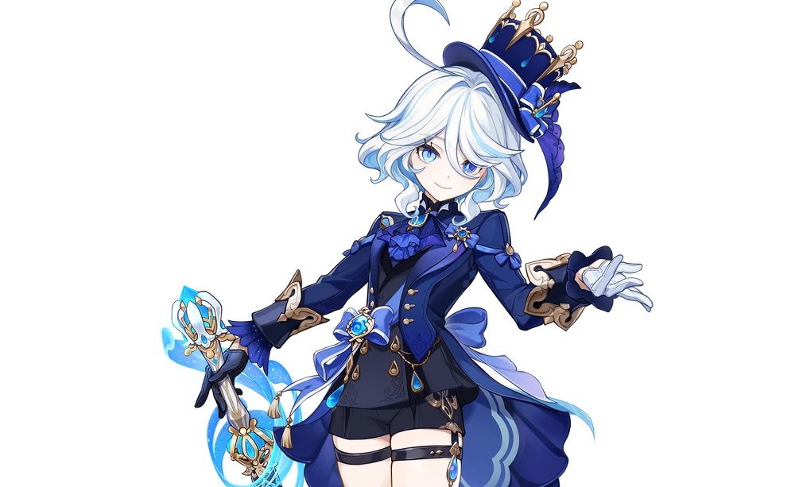
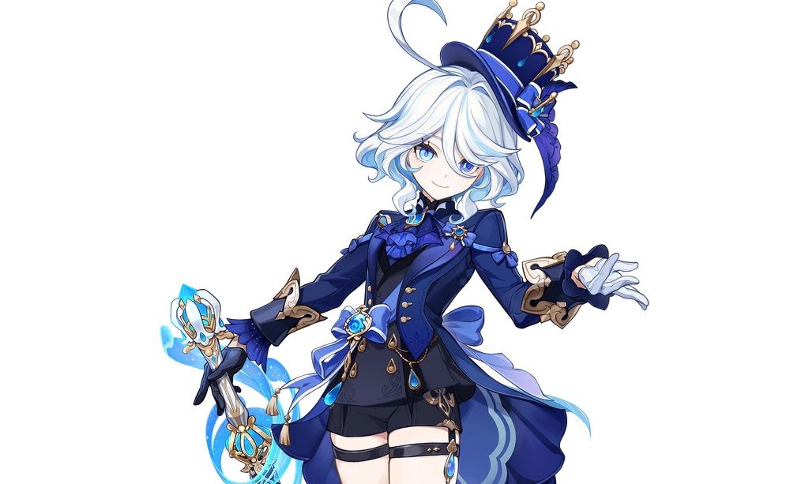

Endless Solo of Solitude
Furina
The "Regina of All Waters, Kindreds, Peoples and Laws" is deeply loved by her people. She follows each and every trial held at the Opera Epiclese with an inextinguishable passion, and is always acutely aware of how the "audience" sees things.